6.6.3.2 漢字の字体の包摂規準の詳細 漢字の字体の包摂規準の一覧を表3に示す。
表3 漢字の字体の包摂規準一覧
a) 方向・曲直などの点画の性質による違い
|
| |
| 1) | | 呈1-36-72，任1-39-4 |
| 2) | 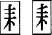 | 籍1-32-50，耗1-44-55 |
| 3) |  | 轄1-19-77，瞎1-66-50 |
| 4) | 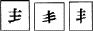 | 潔1-23-73，挈1-57-45 |
| 5) | 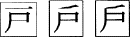 | 扉1-40-66，扁1-57-8 |
| 6) | 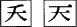 | 呑1-38-61，湊1-44-11 |
| 7) | 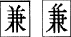 | 嫌1-23-89，廉1-46-87 |
| 8) | 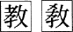 | 教1-22-21 |
| 9) | 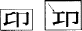 | 昂1-25-23 |
| 10) | | 歳1-26-48 |
| 11) | | 遂1-31-75，墜1-36-38 |
| 12) | | 判1-40-29，半1-40-30 |
| 13) | 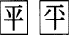 | 秤1-39-73，評1-41-30 |
| 14) | | 捲1-23-94，謄1-38-5 |
| 15) | 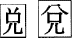 | 閲1-17-60，説1-32-66 |
| 16) | | 廠1-30-19，蛸1-34-93 |
| 17) | 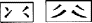 | 率1-46-8 |
| 18) |  | 習1-29-12，煽1-32-90 |
| 19) | 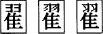 | 躍1-44-86，耀1-45-52 |
| 20) | 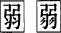 | 弱1-28-69，溺1-37-14 |
| 21) | | 採1-26-46，暖1-35-40 |
| 22) | | 判1-40-29，叛1-40-32 |
| 23) | 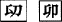 | 霤1-80-37，鰡1-82-63 |
| 24) | | 賊1-34-17，煢1-63-73 |
| 25) | | 冬1-37-63，疼1-65-54 |
| 26) | 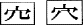 | 控1-25-21，倥1-48-69 |
| 27) | 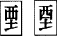 | 堙1-52-37，湮1-62-48 |
| 28) | | 楞1-60-33 |
| 29) | 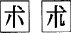 | 術1-29-49，述1-29-50 |
| 30) | 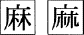 | 磨1-43-65，魔1-43-66 |
| 31) | 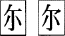 | 祢1-39-10，尓1-53-85 |
| 32) | 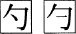 | 酌1-28-64，約1-44-83 |
| 33) |  | 資1-27-81，次1-28-1 |
| 34) | 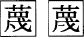 | 襪1-75-4，韈1-80-73 |
| 35) |  | 葢1-72-68 |
| 36) |  | 朕1-36-31 |
| 37) | 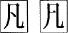 | 汎1-40-38，凡1-43-62 |
| 38) | 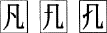 | 筑1-35-62，蛩1-73-62 |
| |
b) 2点画の接触交差関係の違い
|
| |
| 39) | 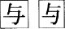 | 与1-45-31 |
| 40) | | 薄1-39-86，縛1-39-91 |
| 41) | | 勇1-45-6，湧1-45-15 |
| 42) | 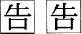 | 酷1-25-83，造1-34-4 |
| 43) | 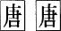 | 塘1-37-68，糖1-37-92 |
| 44) | | 鯛1-34-68，彫1-36-6 |
| 45) | | 鼻1-41-1 |
| 46) | 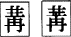 | 冓1-49-42 |
| 47) | | 冉1-49-39，篝1-68-32 |
| 48) | | 呉1-24-66，娯1-24-68 |
| 49) | | 捨1-28-46 |
| 50) | | 渠1-21-84，矩1-22-75 |
| 51) | | 忙1-43-27，妄1-44-49 |
| 52) | 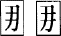 | 娜1-53-17，梛1-59-75 |
| 53) | 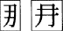 | 那1-38-65 |
| 54) | | 浸1-31-27，掃1-33-61 |
| 55) | | 夛1-52-76 |
| 56) | 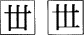 | 丗1-50-34 |
| 57) | | 虐1-21-52 |
| 58) | | 擄1-85-1 |
| 59) | 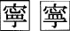 | 寧1-39-11 |
| 60) | 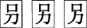 | 別1-42-44，枴1-59-42 |
| 61) | | 毀1-52-44 |
| 62) | | 捏1-57-52 |
| 63) | 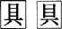 | 具1-22-81，惧1-55-92 |
| 64) | | 査1-26-26 |
| 65) | 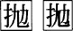 | 抛1-57-38 |
| 66) | 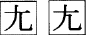 | 尢1-53-87 |
| 67) | | 倦1-23-81，捲1-23-94 |
| 68) |  | 蔓1-44-2，晟1-58-80 |
| 69) | | 亮1-46-28，頽1-80-88 |
| 70) | | 選1-33-10，抱1-42-90 |
| 71) | | 遷1-33-11，僊1-49-2 |
| 72) | | 薩1-27-7，産1-27-26 |
| 73) | | 隔1-19-54，鬲1-82-15 |
| 74) | 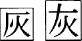 | 灰1-19-5，炭1-35-26 |
| 75) | | 離1-46-5，籬1-68-65 |
| 76) | | 属1-34-16，萬1-72-63 |
| 77) | | 化1-18-29，匕1-50-24 |
| 78) | | 梍1-59-84，皀1-66-5 |
| 79) | | 栓1-32-82，詮1-33-7 |
| 80) | 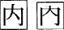 | 内1-38-66，納1-39-28 |
| 81) | 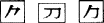 | 負1-41-73，寃1-53-67 |
| |
c) 2点画の結合分離の違い
|
| |
| 82) | | 萌1-43-8，菘1-72-37 |
| 83) | 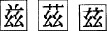 | 滋1-28-2，磁1-28-7 |
| 84) |  | 墳1-42-15，憤1-42-16 |
| 85) | 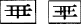 | 樺1-19-82，崋1-54-28 |
| 86) |  | 戴1-34-55，翼1-45-67 |
| 87) | 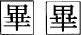 | 篳1-68-42 |
| 88) | | 僊1-49-2，覈1-75-10 |
| 89) | 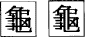 | 龝1-67-52，鬮1-82-13 |
| 90) | 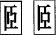 | 頤1-80-85 |
| 91) | 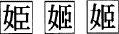 | 姫1-41-17 |
| 92) | | 叟1-50-55，嫂1-53-31 |
| 93) | | 髖1-94-25 |
| 94) | 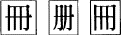 | 冊1-26-93，珊1-27-25 |
| 95) | 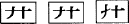 | 廾1-55-16，莽1-72-47 |
| 96) | 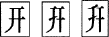 | 妍1-53-11 |
| 97) | 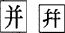 | 并1-54-85 |
| 98) | 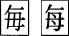 | 晦1-19-2，鋂1-93-15 |
| 99) | 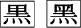 | 黛1-34-67，纆2-84-59 |
| 100) |  | 蘭1-45-86，煉1-46-91 |
| 101) |  | 噌1-33-25，嶒2-8-63 |
| 102) | 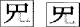 | 菟1-37-49 |
| 103) | | 稗1-41-3 |
| 104) | | 着1-35-69 |
| 105) | | 疏1-33-33，硫1-46-18 |
| 106) | | 篠1-28-36，致1-35-55 |
| 107) | | 狐1-24-49，柧1-59-55 |
| 108) | | 叫1-22-11，赳1-76-66 |
| 109) | | 市1-27-52，肺1-39-57 |
| 110) | | 穉1-67-48 |
| 111) | | 榔1-47-17 |
| 112) | | 專1-53-83，惠1-56-10 |
| 113) | | 盛1-32-25，晟1-58-80 |
| 114) | | 吸1-21-59，笈1-21-72 |
| 115) | | 堽1-52-46 |
| 116) | | 延1-17-68，誕1-35-34 |
| 117) |  | 政1-32-15，嘴1-51-60 |
| 118) | | 匿1-38-31，偃1-48-80 |
| 119) | | 堅1-23-88，濫1-45-84 |
| 120) | | 降1-25-63，鱗1-46-58 |
| 121) | | 冴1-26-67，訝1-75-35 |
| 122) | | 墍2-5-11，炁2-79-60 |
| 123) | | 簪1-68-49，蠶1-74-36 |
| |
d) 1点画の増減の違い
|
| |
| 124) | | 唳1-51-26 |
| 125) | | 堵1-37-40 |
| 126) | | 弑1-55-22 |
| 127) | | 冕1-49-43 |
| 128) | | 逝1-32-34，逃1-38-8 |
| 129) | | 涿1-86-80，瘃2-81-56 |
| 130) | | 𢛳2-12-48 |
| 131) | | 癥1-88-60 |
| 132) | | 微1-40-89，薇1-73-15 |
| 133) | | 霳1-93-70 |
| 134) | | (適用されない) |
| 135) | | 襖1-18-8 |
| 136) | | 瀕1-41-46 |
| 137) | | 隙1-23-68 |
| 138) | | 簒1-50-53 |
| 139) | | 繦1-69-58，雖1-74-13 |
| 140) | | 瀝1-63-45，藶2-87-12 |
| 141) | | 璜1-88-26，𧝒2-88-34 |
| 142) | | 墐2-5-13，懃1-56-73 |
| 143) | | 歎1-35-23 |
| |
e) 類型の統合
|
| |
| 144) | | 瀞1-38-52 |
| 145) | | 亭1-36-66，亮1-46-28 |
| 146) | | 晴1-32-18，請1-32-33 |
| 147) | | 媼1-53-28，慍1-56-18 |
| 148) | | 釁1-78-55 |
| 149) | | 魚1-21-91 |
| 150) | | 𤸎2-81-61，𩩲2-93-12 |
| 151) | | 嬾1-53-47 |
| 152) | | 簡1-20-42，間1-20-54 |
| 152-1) | | 稽23-46 |
| |
f) 筆法の簡化の違い
|
| |
| 153) | | 喞1-51-36 |
| 154) | | 爵1-28-63 |
| 155) | | 館1-20-59，飾1-30-94 |
| 156) |  | 橡1-38-43，象1-30-61 |
| 157) | | 臘1-71-36 |
| 158) | | 煕1-63-70 |
| 159) | | 聰1-70-66，窗1-67-57 |
| 160) |  | 竄1-67-66 |
| 161) | | 祇1-21-32，榊1-26-71 |
| 162) | | (適用されない) |
| 163) | | 脈1-44-14，旅1-46-25 |
| 164) | | 庶1-29-78 |
| 165) | | 繋1-23-50 |
| 166) | | 戯1-21-26 |
| 167) | | 彑1-55-32 |
| 168) | | 彜1-55-20，彙1-55-35 |
| 169) | | 埓1-52-32 |
| 170) | | 認1-39-7，綛1-69-25 |
| 171) | | 樔1-60-70，璅2-80-89 |
| 172) | | 鎖1-26-31 |
| 173) | | 憑1-56-65 |
| 174) | | 愨1-56-34 |
| 175) | | 帽1-43-25 |
| 176) | | 瑁1-64-80 |
| 177) | | 畫1-65-33 |
| 178) | | 諭1-45-1，兪1-49-33 |
| 179) | | 鏖1-79-18，魘1-82-22 |
| 180) | | 麪1-83-49，麭1-83-50 |
| 181) | | 荊1-23-53 |
| 182) |  | 厖1-50-45，尨1-53-88 |
| 183) | | 掫1-57-56 |
| 184) | | 梟1-59-70 |
| 185) |  | 虍1-73-40 |
| |
g) JIS X 0208にない包摂規準
|
| |
| 186) | | 稽1-23-46 |
| 187) | | 晷1-85-32 |
| 188) | | 襷1-75-7，㩮2-13-59 |
| 189) | | 柗1-85-59 |
| 190) | | 碰1-89-8，掽2-13-27 |
| 191) | | 角1-19-49，确1-89-6 |
| 192) | | 虢1-91-48 |
| 193) | | 鬭1-94-31，斲2-13-74 |
| 194) | | 舘1-20-60，舒1-48-16 |
| 195) | | 丰1-14-6 |
| 196) | | 㠯2-8-79 |
| 197) | | 庹2-12-6 |
| 198) | | 凞1-14-55 |
| 199) | | 凞1-87-58 |
目次にもどる。